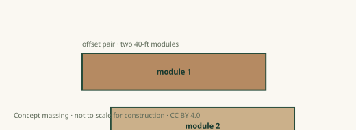
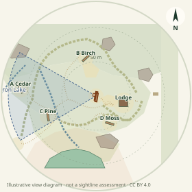

Community rental home · Two containers · wide pair · 40-ft single-container concept
Cabin E · Fern
A small rental tucked into fern and hemlock, a short walk from the lodge.

Share this home: homes/Fern-2-wide/ · orientation · main view · siting

- Use
- Community rental home
- Approximate size
- ~50 m² clear floor area · ~66 m² footprint
- Principal facade
- south · ~280°
- Placed
- 235 m east, 105 m south of the fictional map origin
- Shoreline
- ~161 m
- Wetland
- ~71 m
Orientation #
The porch turns west into the fern and hemlock understory, with a lake glimpse beyond. The entrance is on the east, toward the lodge and the path.
Main view #
Fern, hemlock and a distant plane of lake light. The view is more forest than water. Bearing ~270°, ~167 m to Heron Lake. mostly wooded, with a strong conifer component for winter screening.
Through hemlock, fern, yellow birch.
Nearby homes #
Cabin C is about 76 m west-south-west and may be glimpsed through fern and hemlock; Cabin A is about 110 m west across the slope. The lake light dominates the view. In the view cone: Cabin A at ~111 m; Cabin C at ~76 m.
Path and entry #
The east spur reaches the east entry. The porch, bedroom and living windows face west, away from the lodge and the path.
Winter #
Hemlock and cedar keep the lodge screened. Leaf-off opens the lake glimpse and makes the east rock shelf more visible from the path.
Siting #
All illustrative checks pass. These are project assumptions, not legal setbacks or a permit.
- 161 m from the shoreline (setback 30 m)
- 70.9 m from the wetland (buffer 30 m)
- Inside the parcel
- 49.7 m from South knoll outcrop (buffer 8 m)
- 51.8 m from a drainage channel (buffer 10 m)
- Natural ground slope 14.7% (limit 22%)
- Building bench cut/fill 0.73 m (limit 1.6 m)
- Crane reach 14.9 m (limit 24 m)
- Ramp foot 13.3 m from an emergency or access lane (limit 50 m)
- Entry 3.3 m from a walking path (limit 18 m)
- Ramp foot 6.7 m from a walking path (limit 18 m)
Design note #
As the community rental, this home needs robust finishes and a locked owner's store. The model can accept a second entrance without changing the landscape.
Drawings and next steps #
Base Cabin A drawings · Look inside Cabin E · Show Cabin E on the hamlet map · Design Lab
This page is a brief, not a construction drawing. No photograph, stock image or proprietary design is reproduced.